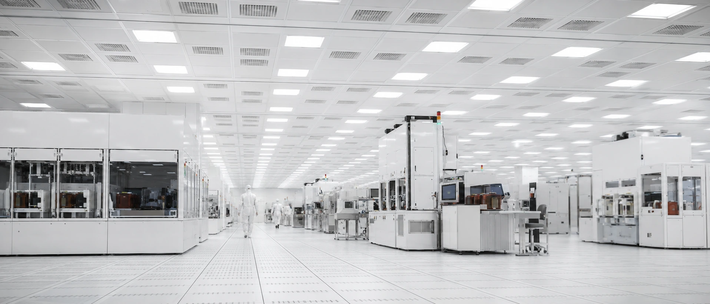
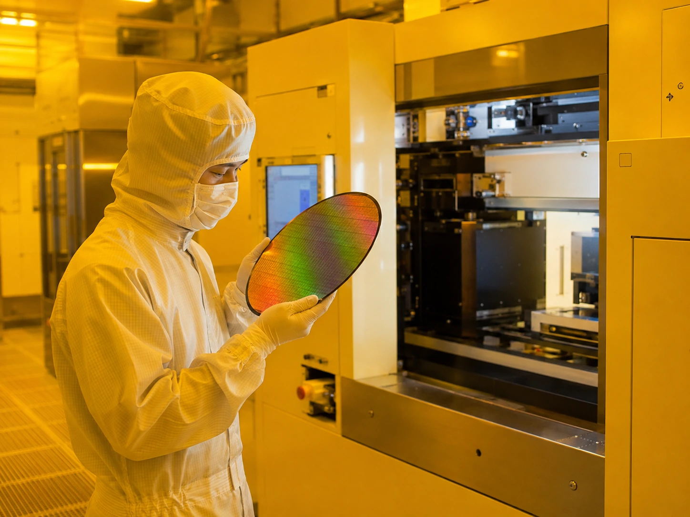

無塵室規劃及建造
從潔淨等級與氣流設計，到隔間工程與認證測試——TeraFab 為先進製程打造 ISO Class 3–6 的生產環境，並管理它與結構、機電、搬送系統之間的每一個介面。

SCOPE · 服務範疇
我們負責的事
潔淨等級與分區規劃
依製程需求規劃 ISO Class 3–6 潔淨分區，與 Ballroom／Bay-Chase 佈局比選。
氣流與環境設計
垂直層流設計、FFU 覆蓋率計算、溫濕度與正壓壓差控制策略。
回風系統設計
回風夾層、回風豎井與乾盤管（DCC）系統之風路與熱負荷設計。
潔淨隔間與構造工程
庫板隔間、天花板格網、高架地板與防振構造之發包與施工管理。
AMC 微污染控制
化學濾網配置、建材揮發管制與 AMC（氣態分子污染）監測規劃。
微振動與靜電防護
振動源隔離與樓板振動評估、ESD 接地系統與離子化設備配置。
潔淨室認證測試
粒子濃度、風速風量、壓差與洩漏測試之第三方認證管理與缺失改善。
既有廠房升級改造
運轉中廠房之潔淨等級升級、區域擴建與不停產施工規劃。
LAYOUT · 佈局
Bay-Chase，讓設備密度與維護效率並存。
製程區（Bay）與維護區（Chase）交錯排列，搭配上方 OHT 軌道與下方次設備層的垂直對位， 決定了整座廠的良率與運轉成本。TeraFab 在佈局階段即整合搬送動線、機電上下埠與未來擴充彈性， 避免後期昂貴的變更設計。

METHOD · 執行方式
統包顧問怎麼做
需求定義
盤點製程機台清單與潔淨、振動、AMC 需求，訂定設計基準（Design Criteria）。
設計整合
以 BIM 協同結構、機電與 OHT 介面，完成基本與細部設計。
發包與施工管理
隔間、FFU、高架地板等分包之規格書、廠商評選與全程監造。
測試認證移交
TAB 測試調適、粒子認證與竣工文件移交，確保如期達標啟用。
ISO 3–6
潔淨等級設計範圍
±0.1°C
溫控精度設計能力
22,500m²
單層潔淨室規劃面積（FAB-1 案例圖說）
Bay-Chase
佈局與 OHT／次設備層垂直整合
＊指標為規劃設計能力示意（以 FAB-1 案例圖說為基準），實際規格依專案需求訂定。
INTERFACE · 相關系統
無塵室不是孤島
潔淨環境由結構、機電與搬送系統共同支撐——這些介面，正是統包顧問的價值所在。